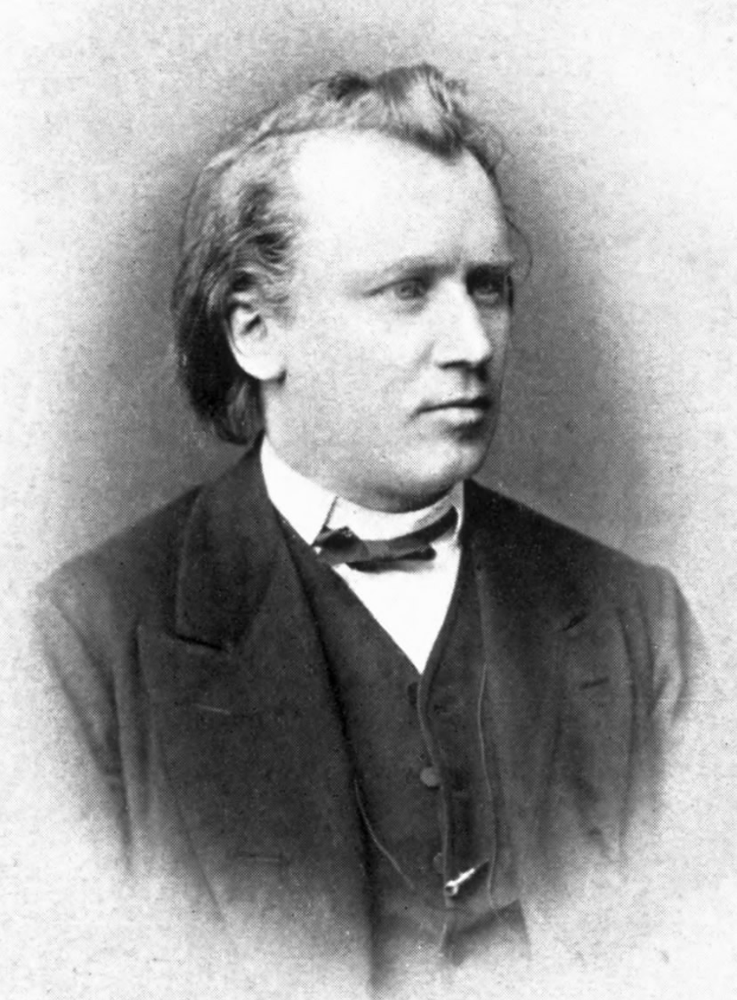

Brahms had hoped to be given the conductorship of the Hamburg Philharmonic, but in 1862 this post was given to the baritone Julius Stockhausen. (Brahms continued to hope for the post; but when he was finally offered the directorship in 1893, he demurred as he had "got used to the idea of having to go along other paths".) In autumn 1862 Brahms made his first visit to Vienna, staying there over the winter. There he became an associate of two close members of Wagner's circle, his earlier friend Peter Cornelius and Karl Tausig, and of Joseph Hellmesberger Sr. and Julius Epstein, respectively the Director and head of violin studies, and the head of piano studies, at the Vienna Conservatoire. Brahms's circle grew to include the notable critic (and opponent of the 'New German School') Eduard Hanslick, the conductor Hermann Levi and the surgeon Theodor Billroth, who were to become amongst his greatest advocates.
In January 1863 Brahms met Richard Wagner for the first time, for whom he played his Handel Variations Op. 24, which he had completed the previous year. The meeting was cordial, although Wagner was in later years to make critical, and even insulting, comments on Brahms's music. Brahms however retained at this time and later a keen interest in Wagner's music, helping with preparations for Wagner's Vienna concerts in 1862/63, and being rewarded by Tausig with a manuscript of part of Wagner's Tannhäuser (which Wagner demanded back in 1875). The Handel Variations also featured, together with the first Piano Quartet, in his first Viennese recitals, in which his performances were better received by the public and critics than his music.
Although Brahms entertained the idea of taking up conducting posts elsewhere, he based himself increasingly in Vienna and soon made it his home. In 1863, he was appointed conductor of the Wiener Singakademie. He surprised his audiences by programming many works by the early German masters such as Heinrich Schütz and J. S. Bach, and other early composers such as Giovanni Gabrieli; more recent music was represented by works of Beethoven and Felix Mendelssohn. Brahms also wrote works for the choir, including his Motet, Op. 29. Finding however that the post encroached too much of the time he needed for composing, he left the choir in June 1864. From 1864 to 1876 he spent many of his summers in Lichtental, today part of Baden-Baden, where Clara Schumann and her family also spent some time. His house in Lichtental, where he worked on many of his major compositions including A German Requiem and his middle-period chamber works, is preserved as a museum.
In February 1865 Brahms's mother died, and he began to compose his large choral work A German Requiem, Op. 45, of which six movements were completed by 1866. Premieres of the first three movements were given in Vienna, but the complete work was first given in Bremen in 1868 to great acclaim. A seventh movement (the soprano solo "Ihr habt nun Traurigkeit") was added for the equally successful Leipzig premiere (February 1869). The work went on to receive concert and critical acclaim throughout Germany and also in England, Switzerland and Russia, marking effectively Brahms's arrival on the world stage. Brahms also experienced at this period popular success with works such as his first set of Hungarian Dances (1869), the Liebeslieder Waltzes, Op. 52, (1868/69), and his collections of lieder (Opp. 43 and 46–49). Following such successes he finally completed a number of works that he had wrestled with over many years such as the cantata Rinaldo (1863–1868), his first two string quartets Op. 51 nos. 1 and 2 (1865–1873), the third piano quartet (1855–1875), and most notably his first symphony which appeared in 1876, but which had been begun as early as 1855. During 1869 Brahms had felt himself falling in love with the Schumann's daughter Julie (then aged 24 to his 36) but did not declare himself; when later that year Julie's engagement to Count Marmorito was announced, he wrote and gave to Clara the manuscript of his Alto Rhapsody (Op. 53). Clara wrote in her diary that "he called it his wedding song" and noted "the profound pain in the text and the music". From 1872 to 1875, Brahms was director of the concerts of the Vienna Gesellschaft der Musikfreunde. He ensured that the orchestra was staffed only by professionals, and conducted a repertoire which ran from Bach to the nineteenth century composers who were not of the 'New German School'; these included Beethoven, Franz Schubert, Mendelssohn, Schumann, Joachim, Ferdinand Hiller, Max Bruch and himself (notably his large scale choral works, the German Requiem, the Alto Rhapsody, and the patriotic Triumphlied, Op. 55, which celebrated Prussia's victory in the 1870/71 Franco-Prussian War). 1873 saw the premiere of his orchestral Variations on a Theme by Haydn, originally conceived for two pianos, which has become one of his most popular works.